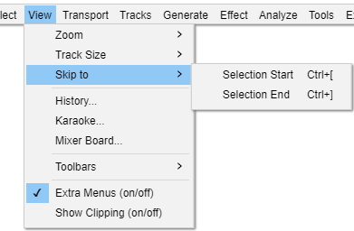

View Menu: Skip to
- Click, or hover, on any menu item in the image to read about that command. Skip the image
- 
Selection Start Ctrl + [
Attempts to move the left edge of the current selection to the center of the screen, without changing the zoom level. This is useful if you are zoomed far in at the right edge of the selection and then wish to view the left edge, which may be currently off screen. Also if you have lost sight of the selection entirely by scrolling too far, either this or the companion command "Selection End" (below) will always bring the selection back on screen.
Selection End Ctrl + ]
Attempts to move the right edge of the current selection to the center of the screen, without changing the zoom level. This is useful if you are zoomed far in at the left edge of the selection and then wish to view the right edge.which may be currently off screen. Also if you have lost sight of the selection entirely by scrolling too far, either this or the companion command "Go to Selection Start" ( above ) will always bring the selection back on screen.
- Using either command after zooming in or out provides a keyboard method to zoom in or out on a selection edge. To enable the keyboard shortcuts for these commands go to the Keyboard Preferences page and set the Defaults to Full. This is otherwise possible only by Ctrl and mouse wheel scroll while the mouse pointer is positioned at either selection edge.
- In some cases. either command may have no effect or the selection edge may not move fully to center if the selection is over to left or right so that the Timeline position cannot move sufficiently. For example, a selection wholly to left of the waveform center point cannot move if the visible left edge of the waveform starts at time zero. If "Enable scrolling left of zero" is enabled in Tracks Behaviors Preferences then it will always be possible to scroll the display so the cursor or selection edge is at the center of the track display.